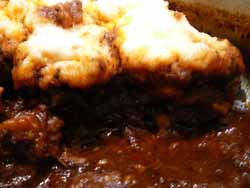

Mom makes goulash
We had a few friends over for dinner last night and I wanted to serve something that would taste good on an extraordinarily cold night and make my guests glad they had taken the trouble to venture out in such terrible weather. My favorite local grocery store had round roasts on special, so I thought I would get one, cut it up, and just make a good beef stew, along with salad and bread.
Then the research began. Cook’s Illustrated pretty much scotched my plan to use the round roast, saying that the only cut of beef that stands up to long braising without getting dry and tough is chuck. It’s true that round roast is very lean and can be dry. So my plan to save money by shopping for what was on special was discarded, and I must say it went against the grain to pay over $5/pound for chuck roast! I wanted the stew to be really special, though, so I decided it was worth it. Next I perused one of my favorite food blogs, Simply Recipes, looking at some of her stews for ideas. She has a recipe for beef goulash with dumplings that sounded delicious and that’s what I decided to make.
I have been obsessed with dumplings since I was a little girl and had one of those food experiences that I have never been able to duplicate – you know the ones I mean? Where you eat something that’s so delicious in every particular that it haunts you for the rest of your life? I suppose romantics have that feeling about a particular love object, maybe their first boy or girlfriend, and music lovers may feel that way about a song, melody, or composition, but true foodies definitely all have a special food memory, or at least one. Mine is the chicken and dumplings my mother made one time when I was small. It was almost like a top of the stove chicken pot pie with a dumpling topping, at least in my memory, with large pieces of boneless chicken in slightly thickened sauce, vegetables, and lots of lovely, fluffy dumplings.
Naturally my mother can’t even remember ever making such a dish, and she never made it again as far as I can recall. She is a frugal woman of Scotch-Irish background, constantly watching her weight and that of her whole family, and she wouldn’t be one to indulge dumpling-love too often. I have made dumplings a few times myself as an adult, but hardly ever. So this goulash was a real treat. I was a little leery of the fact that it didn’t call for browning the meat, but I guess that is compensated for by caramelizing all the onions. The sauce is spectacular, seasoned with toasted caraway, fresh herbs, and hot and sweet paprika. The dumplings are wonderfully fluffy and light, and if we hadn’t had guests I would have eaten a lot more of them.
Oh, and by the way, a number of Hungarians commented on Elise’s blog that what she cooked bore no resemblance to “real” Hungarian goulash and she should be ashamed even calling it that just because it contains paprika, and so on. Please don’t bother making any comments like that on here; if you don’t like the goulash in this country, go back to Hungary and eat goulash until it comes out your ears!
Beef Goulash with Dumplings from Simply Recipes

Goulash
- 2 Tbsp extra virgin olive oil
- 4 cups onions, thinly sliced
- 1 Tbsp sugar
- 3 garlic cloves, minced
- 1 Tbsp caraway seeds, toasted and ground
- 1 1/2 tablespoons sweet Hungarian paprika
- 1 teaspoon spicy Hungarian paprika
- 2 Tbsp minced fresh marjoram leaves
- 1 teaspoon minced fresh thyme leaves
- 1 bay leaf
- 3 Tbsp tomato paste
- 2 Tbsp balsamic vinegar
- 4 cups chicken stock
- 2 1/2 pounds chuck roast, cut into 2-inch cubes (remove excess fat)
- 1 teaspoon kosher salt
- 1/4 teaspoon freshly ground black pepper
Dumplings
- 2 cups cake flour
- 2 teaspoons baking powder
- 1 teaspoon salt
- 3/4 cup milk
- 2 Tbsp melted butter
1. In a large covered sauté pan, heat the olive oil and sauté the onions and sugar until caramelized. Add the garlic and caraway seed. Cook another minute.
2. Add the sweet and spicy paprika, marjoram, thyme and bay leaf. Sauté another minute, until fragrant.
3. Add the tomato paste. Deglaze with the vinegar and the stock and add the pieces of beef, salt and pepper. Bring to a boil, then lower to a simmer. Cover and cook until very tender, about 1 1/2 hours, stirring occasionally. Taste and adjust seasoning with salt and pepper.
4. To prepare the dumplings, sift together the cake flour, baking powder and salt. Combine with the milk and melted butter, mixing lightly. Drop batter by teaspoonfuls into the simmering stew. Cover and cook for 15 minutes. Once you have covered the pan, do not uncover while the dumplings are cooking! In order for them to be light and fluffy, they must steam. If you uncover the pan, the steam will escape and the dumplings will boil instead. After 15 minutes, test the dumplings with a toothpick. If the toothpick comes out clean, the dumplings are done.
Serves 4 to 6.
Comments
I saw chuck roast yesterday at Giant Eagle and was so tempted to get it to make this goulash. Unfortunately, I have to make things I can eat for several meals in a row or that are smaller portion these days. How sad. It looks and sounds wonderful.
You could probably make the whole recipe, except for the dumplings, and freeze it in smaller batches. Then if you wanted dumplings, just mix them up and simmer them in small quantities when you heat up the stew.
I saw that recipe and it really didn’t register with me. But now that I’ve read your post, and gone back and read the comments on Elise’s post, I’m anxious to make it.
Add a comment